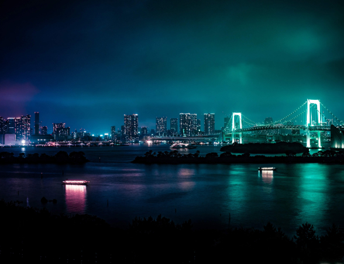
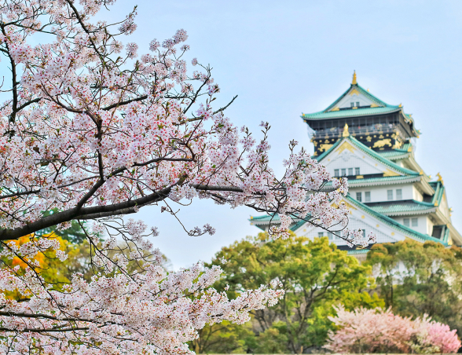
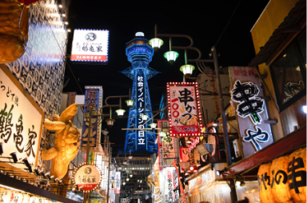
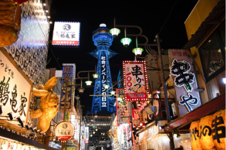

Conheça o Japão
A jornada possui o pacote perfeito para seu estilo e orçamento! Conheço as belas paisagens e a cultura milenar deste belo país!
Destinos da Excursão

Tokyo
Tóquio é uma cidade vibrante e cosmopolita, com seus templos históricos, museus de arte moderna e arranha-céus icônicos. Não perca a chance de mergulhar em sua atmosfera fascinante.

Osaka
Osaka é uma cidade agitada e moderna no Japãos. A cidade é famosa por sua gastronomia deliciosa e por ser um excelente ponto de partida para explorar outras cidades japonesas próximas.
Pagamento
R$ 4.000 em até 12x!
Viaje pagando em até 12 parcelas no cartão, à vista no crédito com 5% de desconto ou no Pix com 10% de desconto!
 


Depoimentos
Tive uma experiência inesquecível. O pacote Japão me permitiu explorar de templos antigos a cidades modernas. E o valor coube no bolso, recomendo!
Lúcia S. Rabello
Minha viagem para Tóquio foi incrível. O itinerário personalizado me permitiu muito em pouco tempo. Excedeu minhas expectativas e já quero viajar com a Jornada novamente!
Olga dos Reis
Minha viagem para Osaka foi inesquecível! A Jornada organizou tudo de forma perfeita, recomendo de olhos fechados!